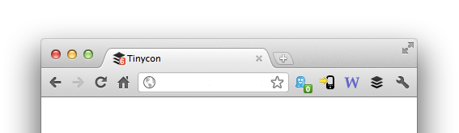

Dev Day 2013 | Ekta Verma / @eku4evr
A Ruby wrapper to integrate Tinycon - A small library for manipulating the favicon, in particular adding alert bubbles and changing images.
A small library for manipulating the favicon, in particular adding alert bubbles and changing images.
Source
#Add the gem to the Gemfile:
gem "tinycon-rails"
#In your JavaScript manifest (e.g. application.js):
//= require tinycon
#In your application.html.erb or application.html.haml make sure you have
favicon_link_tag 'favicon.ico'
#And after all favicon.ico in your app/assets/images
